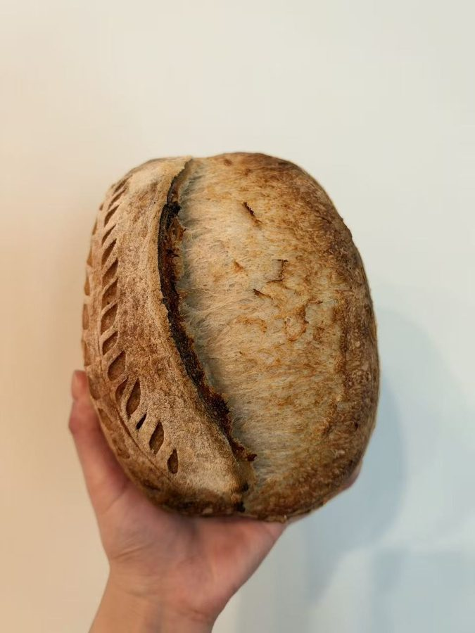
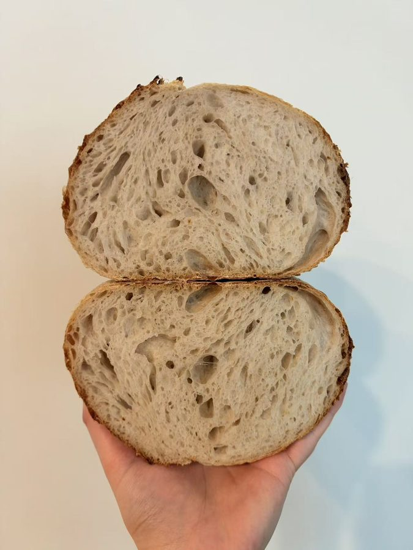

Day 1: levain and dough
-
Build the levain
Feed your starter with flour and water to make 90 g of active levain. Pick a feeding ratio (starter : flour : water) that fits your schedule:
To tell when it’s ready, look at the top surface where it meets the side of the jar:
Not ready yet: the surface is domed, curving up from the jar wall toward a higher middle. It’s still rising.
Ready: the surface has flattened out, or the middle has just started to dip so the edges at the jar wall sit a little higher. It has reached its peak.
-
Mix flour and water, then chill
Mix the flours and water until no dry flour remains. Cover and rest it in the fridge.
Very wet dough? Above about 80% hydration, hold back a little of the water here and add it in the next step with the salt and levain.At least 1 hr in the fridge -
Add levain and salt
Add the levain and salt to the chilled dough and knead until smooth, then round it into a ball. A stand mixer makes this easy, but kneading by hand works too.
-
Stretch and fold, then coil folds
After 30–40 minutes, do one set of stretch and folds: with wet hands, lift one side of the dough, stretch it up, and fold it over. Turn the bowl and repeat on all four sides.
Then, once an hour, do a coil fold, three times in total: lift the dough from the middle with both hands and let the ends fold underneath. Turn the bowl and repeat.
One hour after the third coil fold, it’s time to pre-shape.
1 stretch and fold + 3 coil folds, then 1 hr rest -
Pre-shape
Turn the dough out. Tuck the edges underneath to tighten the bottom into a loose round, then cover and let it rest.
Rest 1 hr -
Shape
Flip the dough over. Fold the two sides in toward the middle, then roll it up from the bottom to the top. Set it seam side up in a floured banneton and pinch the bottom and sides closed.
-
Cold proof overnight
Cover the banneton and refrigerate overnight. The cold slows fermentation, builds flavor, and makes the dough firm and easy to score.
Often 8–16 hr
Day 2: bake
-

Score and bake
Turn the cold dough out onto parchment and score it with a blade. Then bake one of two ways:
On a pizza stone (Bunny’s way): preheat the oven to 500°F with the stone inside for at least 40 minutes to an hour. Slide the loaf onto the stone and put ice cubes in a pan on the bottom of the oven to make steam. Bake at 500°F for 24 minutes, then lower to 450°F and bake another 6–10 minutes, watching the color.
In a Dutch oven: preheat the pot in the oven. No ice needed, since the lid traps the steam. Set the loaf in the pot, cover it, and bake. Put an empty baking sheet on the rack below the pot to block extra heat from underneath.
Why the sheet under a Dutch oven? Cast iron conducts heat very well, so the bottom of the loaf burns easily without something to shield it. A pizza stone doesn’t have this problem.Score with purpose. One long, confident cut at a shallow angle gives the loaf its “ear.” Smaller cuts around it, like the wheat leaves here, are just for decoration.These times are for a loaf of about 700 g. For a much smaller or larger loaf, adjust the time at 500°F: shorter for small loaves, longer for big ones. Then finish at 450°F by color.500°F 24 min (for 700 g), then 450°F 6–10 min -

Cool before cutting
Let the loaf cool completely on a rack before slicing. The inside keeps setting as it cools, and cutting too early makes the crumb gummy.
At least 1 hr